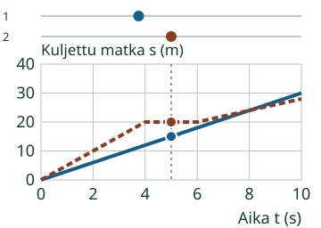
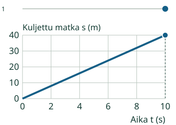
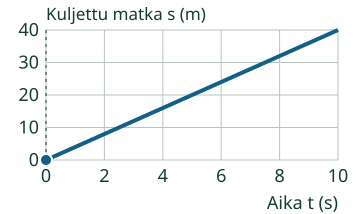
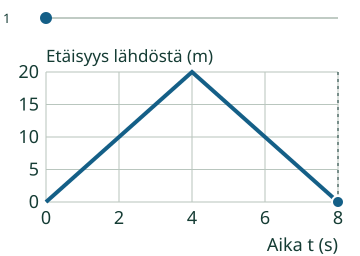

Aava ja Loikka kulkevat. Aava pitää tauon.
Luen liikkeen matka–aika-kuvaajasta.
Tauolla kuljettu matka ei kasva.
Mistä tämän huomaa?
Seuraa yhtä aikaväliä
Välillä 0–4 s Aava kulkee 20 m ja Loikka 12 m. Aava kulkee nopeammin: hänen viivansa nousee jyrkemmin.
Korkeampi ei aina ole nopeampi
Välillä 4–6 s Aavan matka pysyy 20 metrissä. Hän lepää. Loikka jatkaa 3 m/s, vaikka hänen viivansa on vielä alempana. Vertaa viivan nousua, älä vain korkeutta.

Nopeus kahdesta kohdasta
Toinen suora näyttää 40 m ajassa 10 s. Nopeus on 40 m / 10 s = 4 m/s. Sekunteja ei kerrota matkalla.

Kokeile itse
Viiva on suora. Lue kuvaajasta Loikan nopeus, m/s.
Loikka

Ajattelun tueksi
Valitse kaksi kohtaa. Laske matkan kasvu ja jaa kuluneella ajalla. Lopun korkeus yksin on matka, ei nopeus.
Kuvaajan tiedot taulukkona
| Aika (s) | Loikka |
|---|---|
| 0 | 0 |
| 10 | 40 |
Tehtävällä on oma kuvaajansa. Ylempää mallia voi tutkia erikseen, eikä sen katsominen tai toistaminen ole pakollista. Voit käyttää apua ja taulukkoa; ne ovat tukea, eivät itsenäisen hallinnan näyttö.
Vertaa toiseen tilanteeseen
Mitä pystyakselilla on?
Kuljettu matka kasvaa myös palatessa. Sen kuvaaja ei yksin kerro liikkeen suuntaa. Yläreunan suoralla reitillä suunta on tässä mallissa erikseen sovittu oikealle.
Lisämallin pystyakselilla on sen sijaan etäisyys lähtöpaikasta. Kun Aava kulkee takaisin, etäisyys pienenee. Hänen kulkemansa kokonaismatka silti kasvaa.

Opettajalle ja ilman ruutua
Luokat 7–9. Kanoninen rooli process säilyy. Tavoitteena on tulkita akselit ja aikavälit, erottaa lepo ja liike sekä lukea nopeus. Yksittäinen oikea luku ei osoita koko kuvaajanlukuprosessin hallintaa. Pakolliset esitiedot ovat PHY79-SPEED-CONCEPT ja PHY79-GRAPH-01; vahvoja tukia ei muuteta porteiksi.
Piirrä matka–aika-kuvaaja rauhallisesta kävelystä ja tauosta. Kerro, mitä akselien luvut tarkoittavat. Älä piirrä maaston muotoa liikkeen kuvaajan tilalle. Mittaus ja mallikuva ovat eri asioita.
Vain nimetyt äärelliset mallit metreissä ja sekunneissa. Akselit, alueet, kulkusuunta, lähtöpaikka, askel ja katselunopeus on ilmoitettu mallissa. Kuljetun matkan mallin oikealle kulkeminen on erikseen sovittu; kuvaaja ei yksin määrää suuntaa. Tuntematon tai epätuettu arvo ei korvaudu oletuksella. Ruudun piste on yksi mitattava kohta suoralla, ei kuva maastosta tai hahmon koosta. Ei 2D-reittejä, voimia tai mielivaltaista käyttäjän antamaa simulaatiota.
Paikallinen palaute koskee vain nykyisiä vastauksia. Ei formaalia oppijahistoriaa, hallintapäätöstä, viivästettyä näyttöä tai riippumatonta prosessirubriikkia. Vihje, esimerkki ja taulukko ovat tukea. Ei aikarajaa, pakollista puhetta, kuuntelua, nimeämistä tai tiettyä klikkausreittiä. Lukuvastauksessa hyväksytään samanarvoinen desimaaliluku tai kokonaislukujen murtoluku, myös etunollat, merkit ja nolla. Ei laskulausekkeita tai hiljaista pyöristystä. Enintään 128 merkkiä/kenttä.
Lopuksi: Voiko paluu kasvattaa kuljettua matkaa? Mistä kuvaajasta näet etäisyyden lähtöpaikkaan?